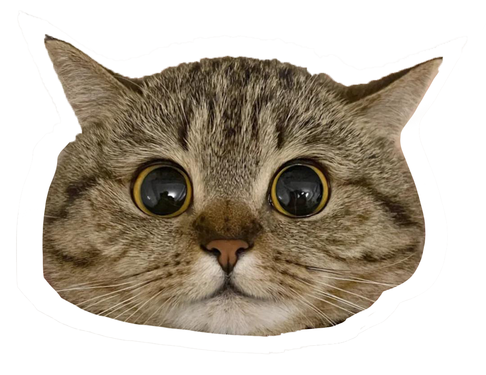

The Mascot of the Internet

1992
Earliest online forum for people to discuss things related to cats
1995
Another early forum for discussing cat related things. 1990 - 2019 showed a rapid expansion of the internet primarily because of ISPs offering services to businesses and home users
1998
The first image of a cat on the internet was an ASCII art of a cat named Giko in a japanese forum called 2chan. Giko's catch phrase was "leave me alone"
early 2000s
Cats become a common topic among online hubs such as 4chan and metafilter
2000
Popular blog launches called "My Cat Hates You"
2004
Another popular blog launches called the infinite cat project
2006
LOLcats and caturday become very popular on the internet"
2006
The first viral cat video every on the internet called puppy vs cat
200?
LOLcats releases popular website called "I can haz cheezeburger"
2009
The internet decides to ban all posts and photos related to cats for 24 hours
2013
Internet cat video awards started being held yearly
2015
Museum exhibit displayed called "how cats took over the internet" at the ?? musuem